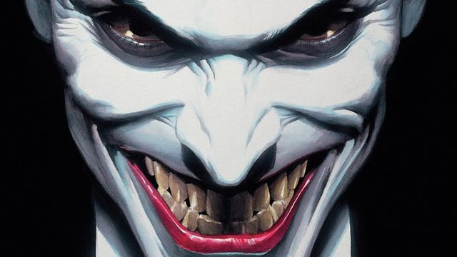
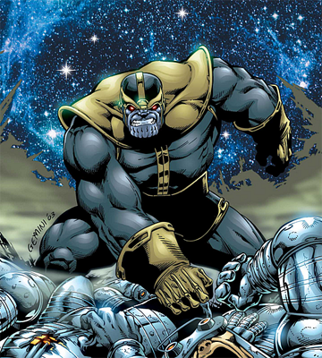
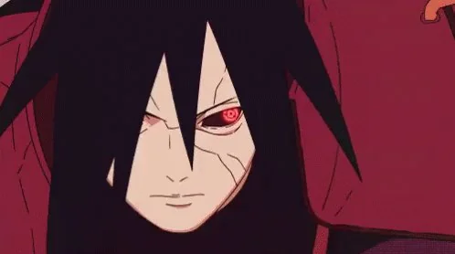
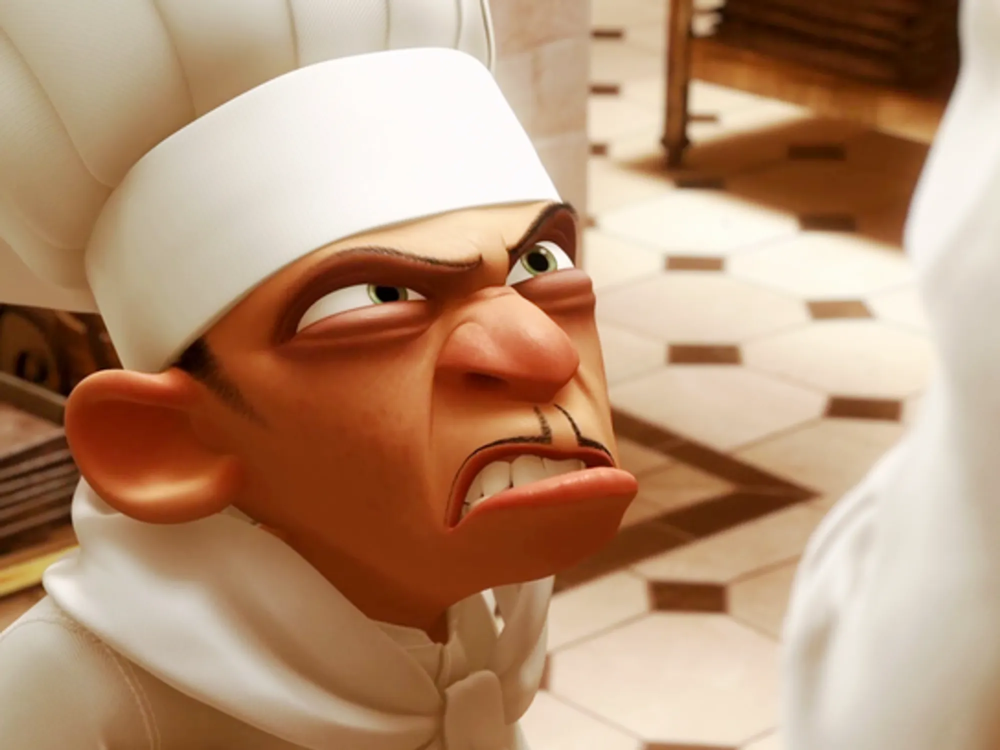
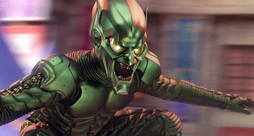

Caos Puro

Coringa
O Príncipe Palhaço do Crime representa a anarquia e a insanidade, provando que basta um dia ruim para transformar o melhor dos homens.
Visitar PáginaExplorando o lado sombrio, as motivações e a complexidade dos maiores antagonistas.
Os vilões são a força motriz que impulsiona a narrativa, atuando como o espelho sombrio das virtudes e fraquezas da humanidade. Mais do que meros oponentes em uma história, eles representam ideologias radicais, traumas não superados e desejos desmedidos de transformação ou destruição. O que define um vilão não é apenas a crueldade de suas ações, mas a convicção de que seu caminho é o único possível, tornando a figura do antagonista uma peça fundamental para testar os limites morais do herói e provocar o público a questionar a própria natureza do bem e do mal.
A grande diferença entre os tipos de vilões reside nas motivações internas que regem seus atos e no nível de consciência sobre a própria maldade. Enquanto alguns agem motivados por um niilismo absoluto e pela busca do caos puro, desprovidos de qualquer plano de redenção, outros operam sob a firme crença de que são os verdadeiros salvadores da narrativa. Existem aqueles cujas ambições são estritamente egoístas, pautadas pelo ganho financeiro ou pela preservação de um status medíocre, assim como há os antagonistas tragicamente moldados pelo sofrimento e pela vingança, ou até mesmo os idealistas obcecados que estão dispostos a moldar o mundo à sua imagem, custe o que custar.

O Príncipe Palhaço do Crime representa a anarquia e a insanidade, provando que basta um dia ruim para transformar o melhor dos homens.
Visitar Página
O Titan Louco busca o equilíbrio do universo através do genocídio de metade da vida existente, movido por uma determinação implacável.
Visitar Página
Lendário líder Uchiha que almejava a paz mundial aprisionando toda a humanidade em uma ilusão perfeita de sonhos contínuos.
Visitar Página
O ganancioso chef de Ratatouille que busca mercantilizar o prestígio da alta gastronomia para seu próprio ganho pessoal.
Visitar Página
Norman Osborn consumido pelo soro experimental, libertando um alter-ego insano, cruel e obcecado pela destruição do Homem-Aranha.
Visitar Página